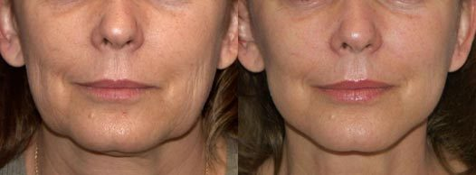

Egy hetes EXPRESSZ FIATALÍTÁS

A japán kozmetikusok nem csupán a BB krémekről, hanem az arcfiatalító termékeikről is híresek. A japán test-, arc-, és hajápoló termékek népszerűsége napról napra egyre csak növekszik. A japán kozmetikusok sikerének kulcsa a legújabb tudományos fejlesztésekben, az ősi hagyományokban, az organikus összetevőkben, és ami a legfontosabb, a hatékonyságukban rejlik!

Ma a már Magyarországon is elérhető! A termék minden szükséges teszten sikeresen átesett, ezek során a krém 100%-ban pozitív eredményt biztosított.
Dr. Nagy Júlia - tapasztalt kozmetikus
 A arc- és nyakfiatalító hatása tudományosan bizonyított tény. A legtöbb, 25 év feletti nőnél ráncok kezdenek megjelenni a szemek és az ajkak körül, illetve gyakoriak a nem túl szép látványt nyújtó nevetőráncok is. Ebben a korban nincs értelme az injekcióknak, ezek károsak lehetnek az egészségre, míg a krém egyszerűen szünteti meg az esztétikai problémákat. Elég egyetlen használat, és a bőr ismét fiatal és ráncmentes lesz! Csak ajánlani tudom.
A arc- és nyakfiatalító hatása tudományosan bizonyított tény. A legtöbb, 25 év feletti nőnél ráncok kezdenek megjelenni a szemek és az ajkak körül, illetve gyakoriak a nem túl szép látványt nyújtó nevetőráncok is. Ebben a korban nincs értelme az injekcióknak, ezek károsak lehetnek az egészségre, míg a krém egyszerűen szünteti meg az esztétikai problémákat. Elég egyetlen használat, és a bőr ismét fiatal és ráncmentes lesz! Csak ajánlani tudom.
Több évnyi személyes tapasztalat alapján kimondhatom, hogy a krém arcemelő hatása egyszerűen lenyűgöző. A termék felbukkanása előtt egy ilyen eredmény elérése plasztikai műtétek és szuper-aktív injekciók nélkül szinte lehetetlen volt! De a valóra váltotta ezt az álmot - a termék hatása több, mint egy évig tart. A japán tudósok és orvosok ismét bebizonyították, hogy ők a legjobbak! Erősen ajánljuk a fiatalító et a 35 feletti nők mindennapos bőrápolásához.
A termék formulája ritka, egyedi összetevőkből áll össze. Döntsétek el ti, magatok: kizárólag természetes alkotóelemekből áll, köztük hidrolizált kollagénből, amely helyreállítja a bőr feszességét és vízháztartását, illetve erőteljesen megemeli az arcot és fiatalít. A krém természetes elemeinek köszönhetően nem vált ki irritációt még a legérzékenyebb bőrön sem!
Számos vitamint, ásványi anyagot, aminosavat, biotint, C, B és E vitamincsoportokat, vasat, és betaint tartalmaz. Továbbá, a termék mindenki számára ideális, hiszen teljesen lenyűgözött ez a kifinomult, de ugyanakkor technika alapú megközelítés a bőrápolás terén. Személyesen mondhatom, hogy a krém kellemes illata minden nőnek tetszeni fog! Kifejezetten csak ajánlani tudom a -et a bőrápoláshoz, korosztálytól függetlenül mindenkinek.
Hozzászólások:
(112 hozzászólás)
Helló! 45 éves vagyok, és persze vannak ráncaim. Ki szeretném próbálni a krémet, amit ajánlottatok, nagyon tetszett a leírása, én is meg akarok szabadulni a ráncaimtól, vissza szeretném nyerni az arcom természetesen egészséges kinézetét. Köszönöm!
Az egyik barátnőm ugyanezt a terméket vette meg Japánban, az eredmények elképesztők! Engedjétek meg, hogy gyorsan megmutassam, hogy nézek ki egy heti használatot követően.
A nővérem üzleti úton volt Japánban, azt mondta, hogy a 35 éves nők 16-nak néznek ki! Hihetetlen! Ugyanezt a krémet hozta nekem ajándékba. Nagyon elégedett vagyok az eredménnyel! Már el is felejtettem merre lakik a kozmetikusom, és befejeztem a bőrradírozást is!
Nagyon jó cuccnak tűnik, úgy látom... Szerintem meg kellene rendelnem. Az a legérdekesebb, hogy minden bőrtípus által használható, mert az én bőröm nagyon-nagyon érzékeny, így ez fontos tulajdonság. Ki fogom próbálni, köszönöm! 